and "Open"
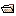
toolbar buttons just below the menu bar.
and "Open"
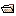
toolbar buttons just below the menu bar.
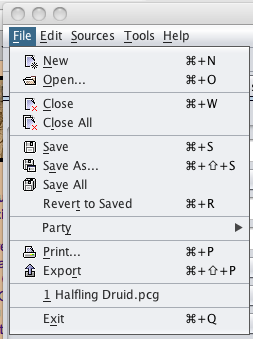
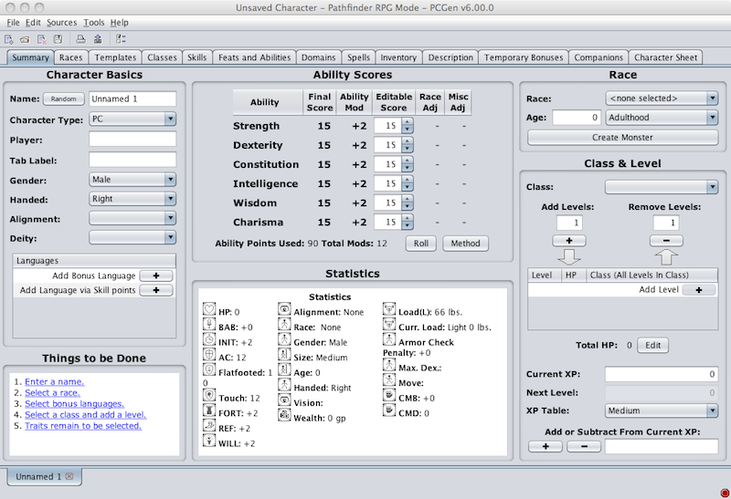
This tab contains a number of basic fields such as Name , Alignment , Race , and Class . This tab also includes fields for your character's Ability Scores .
Enter your ability scores in the Score [Editable] field.
You should also enter a character name and player name at this time, and you must select an alignment for your character in order to select a class later.
You can enter a Tab Label if you wish the tab for your character to be designated with something other than your character's name.
If you click on the Random button, the Random Name Generator will appear. Select the ruleset (Name Type) from the left pane and then click the Generate Name button. A random name will appear in the right hand pane. Keep clicking the Generate Name button until you are happy with the name and then click the Accept button to return it to the Summary character creation tab.
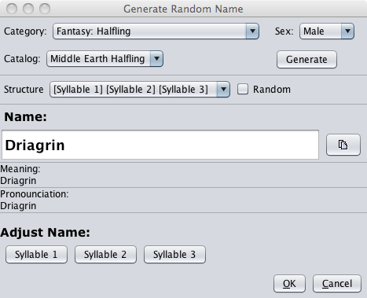
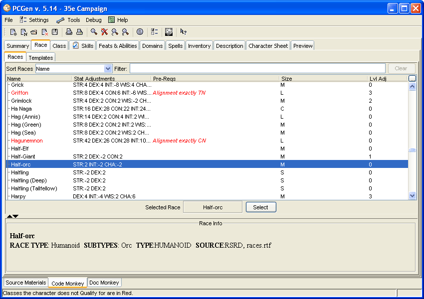
This screen is divided into two sub-tabs, Races and Templates . The Races ab display the available Races the character can belong to. The Templates tab display the available templates that can be added to the character. You can apply templates to your character at any time.
When you select a race by clicking a race in the top frame of the Races sub-tab, information about the race is displayed in the lower frame of the Races sub-tab.
Once you have chosen the race for your character, click the Select button or double-click the desired race name. [You could also have selected a race on the Summary tab]
Note: You must select an alignment on the summary tab before choosing a race.
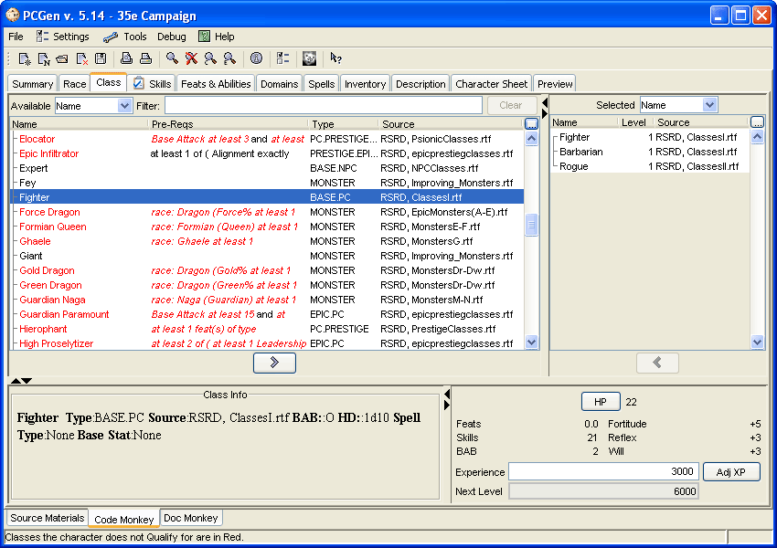
In the upper left frame you will see a list of classes available for use. [Some of these may be red, indicating that you do not qualify for them.]
Now click a class. You will again notice that information about the class is displayed, this time in the lower left frame. [If you do not qualify for a class, the reason your character doesn't qualify for a class is indicated in red on the class description.]
Either click the Add (">") button or double-click a class to add a level of it.
The level appears in the upper right frame.
With your first class level, you will be asked to select a set of clothing (which you get for free), and may be asked to make other selections if the class includes any.
Note: When making a choice (or choices) from a pop-up dialog, you will see how many choices you have remaining at the bottom of the popup.
Click an item of interest from the upper frame, and click the "Add" button to add it to the lower frame of the dialog and decrement your number of choices by one. (You may also double-click an item in the upper dialog to add it to the lower frame.) You may then continue to make choices if you have some left (such as for feats that can be taken multiple times), or you can Close the dialog saving some choices for later.

Once you have added your first class level you will notice that the information in the lower right frame has changed. It now tells you how many Hit Points your character has, how many skill and feat selections it has remaining, what your base attack bonus is, and what your saving throw values are.
You can adjust your Hit Point total by clicking the HP button as per the summary page. All characters gain maximum hit points at first level, but thereafter you will need to tell PCGen how many hit points you gained with each level increase.
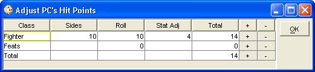
You can also add your Experience total and Next Level amount so it can print on the character sheet. This is done by clicking on the Adj XP button.

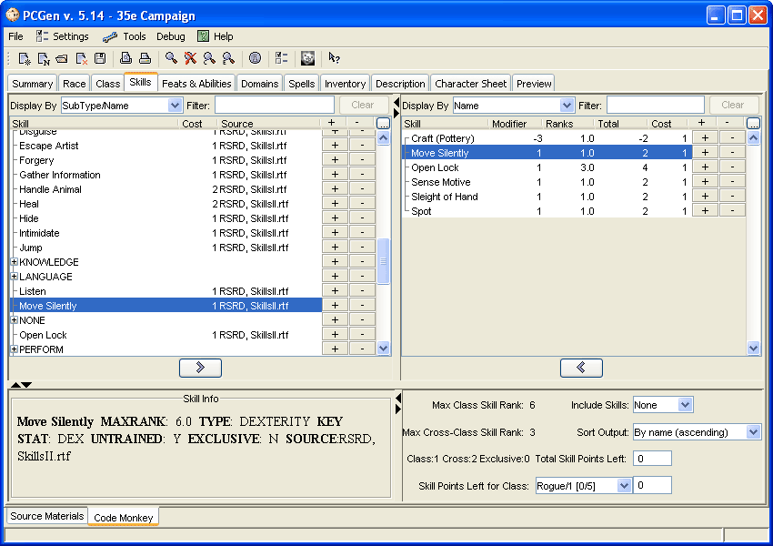
This is where you can add ranks in skills.
The skill names appear in the upper left frame, their descriptions appear in the lower left frame, the skills you have added appear in the upper right frame, and you add skills by selecting them and clicking Add (">") or by double-clicking the skill or by clicking on the "+" button.
If you change your mind about a skill, you can remove a rank in the skill by clicking the skill in the upper right frame and clicking the Remove ("<") button or double clicking the skill in the right hand frame or clicking on the "-" button. You may also right-click a skill in the upper-right frame to add or remove ranks from that skill.
The number of skill points you have left to spend is shown in the lower right frame.
If your character has more than one class, you will need to select which class you will purchase your skills as and then purchase them as listed above.
There are a few other useful options for adding skill points that are accessed by right-clicking a skill and using the popup menu. One of these is to assign the skill the maximum possible ranks.
Note: The Feats Tab now has a Salient Divine Abilities sub-tab where you can select Divine abilities when you have extremely high level characters.
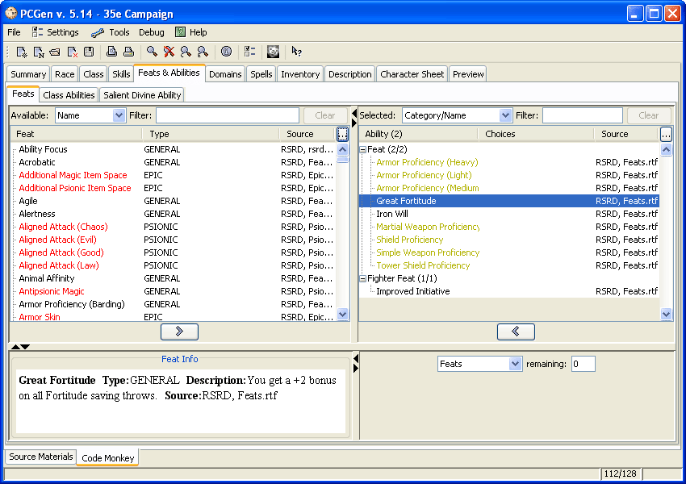
Feats appear and are selected just as classes and skills are.
Feats you do not qualify for are listed in red.
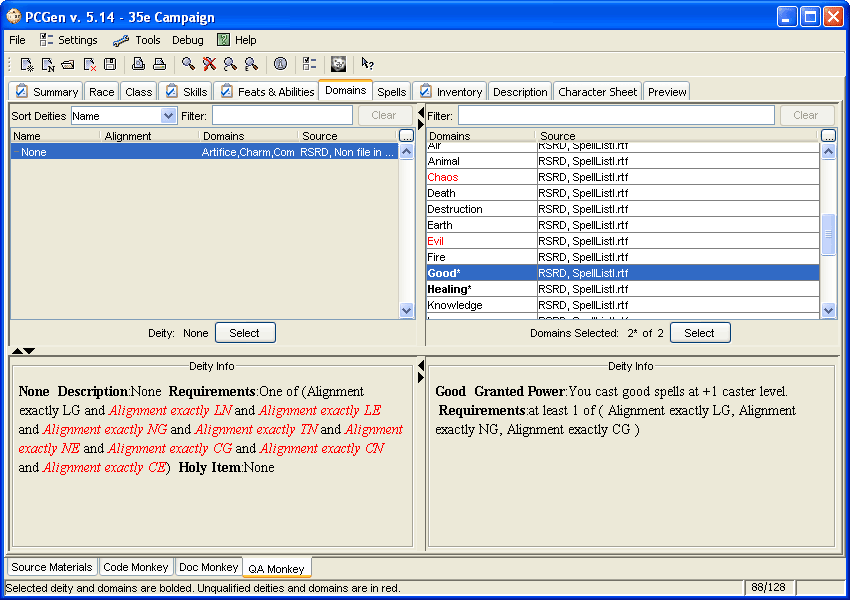
Here you can enter a deity for your character to worship if desired and choose clerical domains if your character is a priest.
To create a deity, select the "None" deity and right-click on it, you can then select Create New Deity . You should enter a name, favored weapon, domains, and allowed worshipper alignments for your deity as a bare minimum. Other information is useful but not absolutely essential to creating your character. Once you have entered all the desired information, click the Save button on the deity editor.
Note: More detailed information on deity creation is available in the Deity List Editor section of this Guide.
If your character is a Priest, you will be able to select domains after choosing the deity. Select your domains from the upper right frame by highlighting them and clicking Select, or by double-clicking.
Note: The deity "None" allows the selection of any two domains.
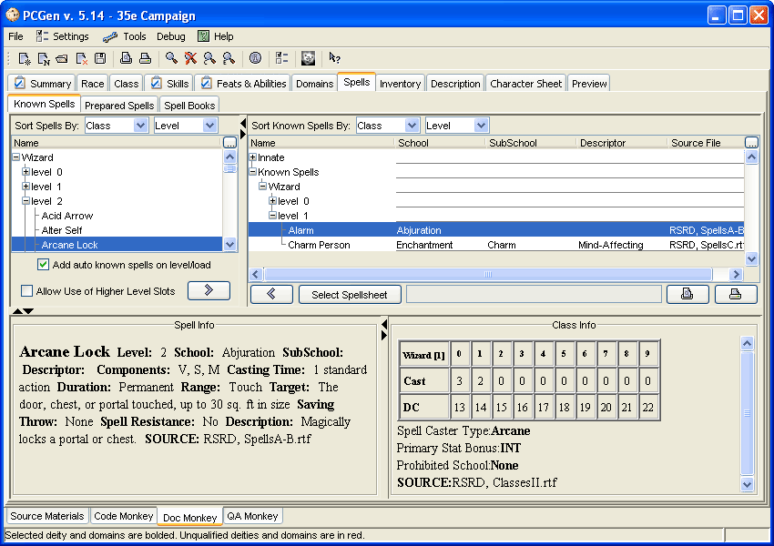
On the Known Spells sub-tab the left frame contains a complete list of spells for each spellcasting class you possess. The right frame displays spells you "know" (the ones your deity grants, the ones you know due to class, or the ones in your spell book, as applicable) and are able to cast.
If your spellcasting class has a list from which the character can prepare without a spell book, all spells on the class list will be included in the Known Spells "spellbook" if the check box - "add auto known spells on level/load" is checked.
If your spellcasting class has a number of spells the character knows and can cast without preparation, you may choose these from the upper left frame (info on each spell is displayed in the lower left frame when it is selected) and use Add (">") or double-click them to add them to the upper right frame into the Known Spells "spellbook".
Information on the selected spellcasting class from the upper left frame is displayed in the lower right frame.
If your spellcasting class uses a spellbook to store spells which you prepare daily, you can add spells to it in the same fashion. Once you have added the spells you "know" you can switch to the Spell Books sub-tab to record which of your known spells are in which books.
To indicate which spells you have prepared (for those classes which prepare spells), (i.e. different sets depending on if you're in the city or in a dungeon) switch to the Prepared Spells sub-tab to create your prepared spell lists.
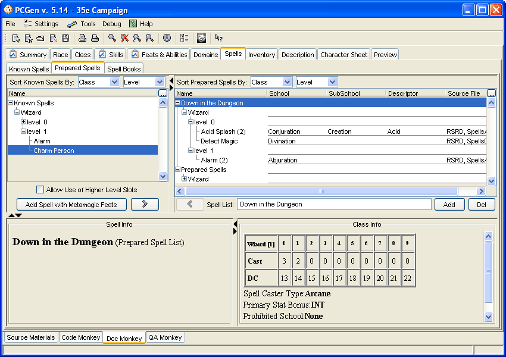
you can create Spell Lists by typing a name in the Spell List text box and clicking on the Add button. Next, select it in the Right Hand Frame. When you do this, the left hand frame will change to the listing of your Known Spells and you will now be drawing from that list to populate the list of prepared spells. Additionally, if you are a divine spellcaster with domains, you will be allowed to prepare one of your domain spells specifically.
Warning: PCGen will allow you to add lower level spells into higher level slots (per the rules) but this will prevent you from adding you full compliment of spells in those higher slots if a lower level spell is in its place. An easy way to avoid this is to add your highest level spells first and work your way down.
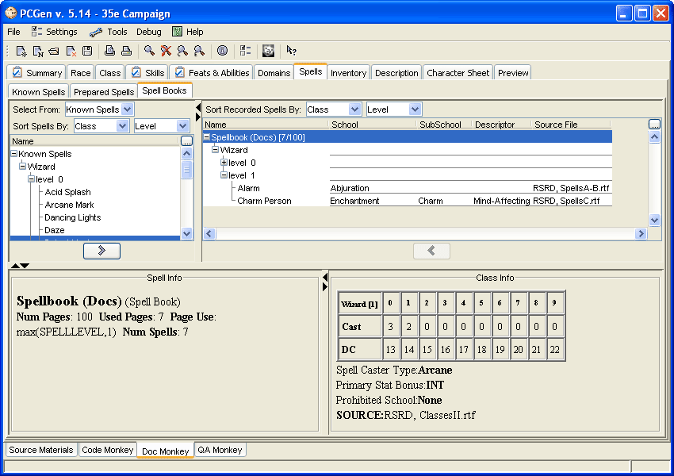
If your class uses a Spellbook to record spells in you can use the Spell Books sub-tab to track your spellbooks. First you will need to add one of these items to your inventory. The Spellbook (Wizard's/Blank) and the Blessed Book items are specifically set up for this purpose, when either item is added to your PC's list of equipment they will also appear on the Spell Books sub-tab. It is suggested that you customize the Spellbook (Wizard's/Blank) item to give it a unique name (such as "Merlin's Spellbook Vol 1") making it easier to keep track of. Once you have a spellbook in your inventory you can add your known spells to it, each spell will take the proper number of pages according to the rules making it easy to know when it's time to buy another spellbook.
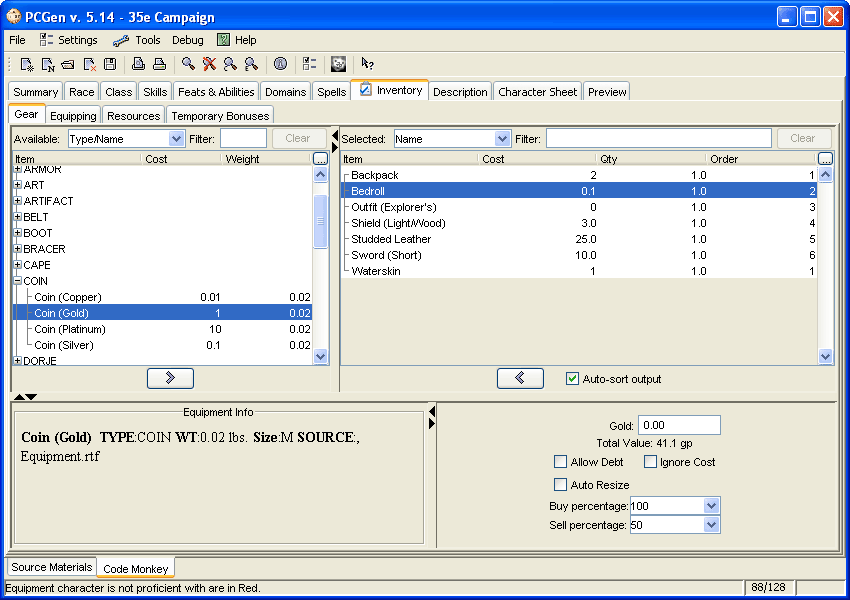
Here you can purchase items, set up different equipment sets and add resources (familiars and the like).
You can purchase items in the same way you purchase skills, as you purchase items you will see the amount of money you have available in the lower right frame diminish.
You can modify this total by editing the "Gold:" field.
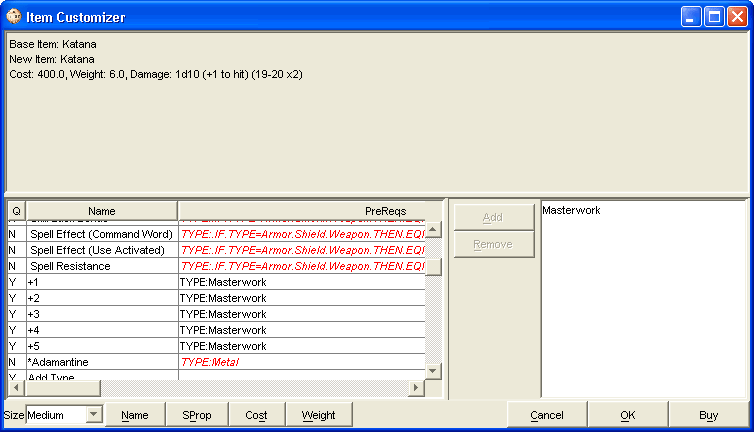
You can change the size of the item from the size pop up menu in the lower left side of the window. You can change the name and other properties of the item with the buttons next to it. Add special properties to the item by selecting them from the list on the left. When you are finished click Buy and the item will be added to your gear list. Customized items also appear in the main gear list for any character to select.

Here you will allocate what items are equipped or stored.
Select locations for the items your character owns on the upper right frame.
Some items are containers and can hold other items.
Every item your character is carrying should be marked "Carried" so your encumbrance will be figured correctly.
Armors, weapons, shields, and magical items need to be marked as "Equipped" so that PCGen gives you the appropriate benefit for using them. Weapons that are carried will appear on the character sheet in the weapons section.
You can add additional equipment sets by typing in the name of an equipment set and clicking on the Add button (in the Upper right hand frame).
You can then select equipment from the left hand frame (this contains what you bought in the gear tab) into the equipment sets you chose (e.g. Dungeon, City etc). You can do this by selecting an item and double clicking on it or clicking on the Add (">") button.
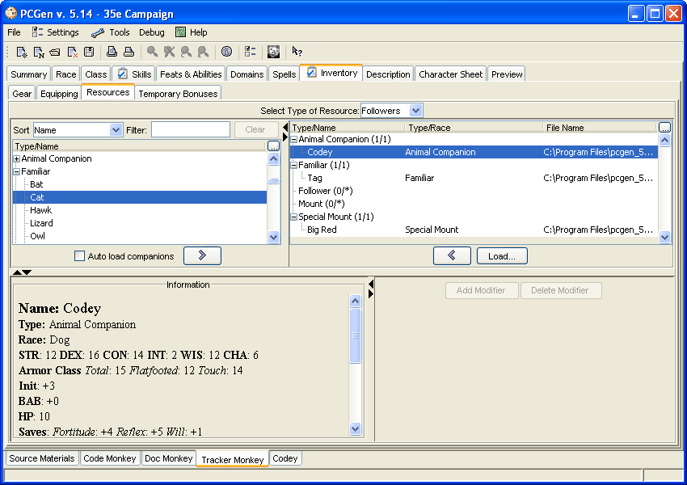
You must save your character before proceeding.
You can then select the type of resource you'd like to add to your character on the Right hand frame (Animal Companion, Familiar, Follower or Special Mount). You can then double click on the resource in the left hand frame to add that resource as a particular type or click on the Add (">") button.
If you already have an existing character saved that you wish to use as a resource for another you can double click the resource type in the right pane and a dialog window will open allowing you to select a .pcg file to use as that resource.
Note: For familiars, animal companions and special mounts to show up, your character has to be of a class that allows those resources (e.g. Wizard for a familiar, Druid or Ranger for animal companions and a Paladin for a special Mount).
You will be asked to enter the name of the resource and then the resource will be saved a as a separate character.

You will then be asked for the save location of the followers PCGen file.
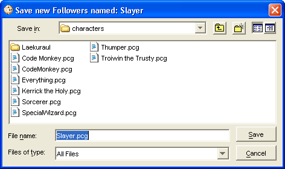
PCGen will then prompt you for hit points for its monster levels (if applicable).
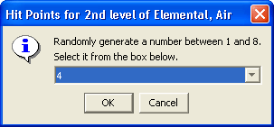
It will then swap you to that new character and you can flesh them out as required.
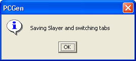
You can then save that new resource and go back the resource tab on the original character. You should then see the new resource added under the resource type in the right hand frame.
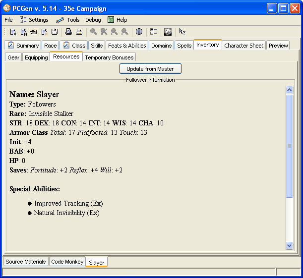
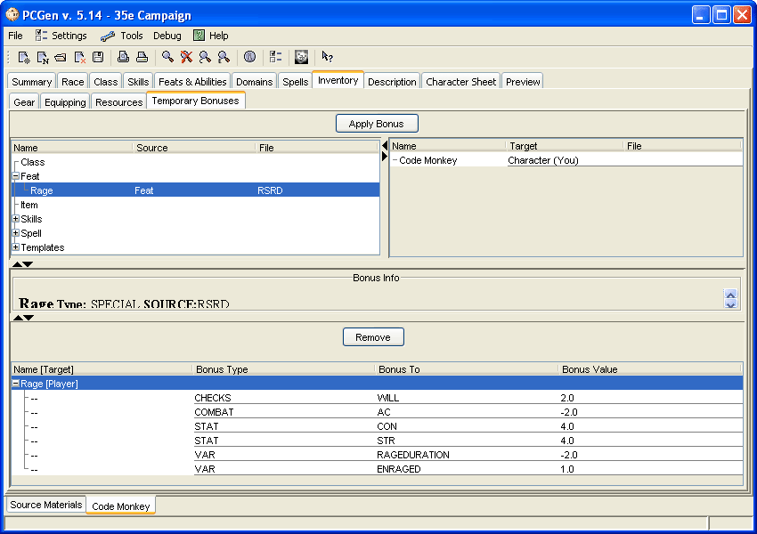
The Temporary Bonus Sub-Tab can be used to apply conditional bonuses to your character such as Spell effects, bonuses due to Rage, having a familiar within 5 feet of your character and more. These bonuses are situational and are useful to see how they would effect your characters stats. Rage, for example, has a number of bonuses and penalties associated with it and this provides a convenient way to apply them in one step. You can then output a separate sheet for when you character in enraged.
Some Temporary Bonuses like Rage are only available to those characters who have acquired the ability. There are many Temporary Bonuses which are available to any character when the situation calls for it. There are conditional templates such as Fatigued and Exhausted. Many spell effects are available this way because they can be cast on characters by other characters and thus you would not need to have the spell on your spell list to benefit from it. The craft skill and some others have penalties which can be applied if your character does not have the correct tools for the job.
Apply any Temporary bonuses you want by selecting the bonus and clicking Apply Bonus. Certain Temporary Bonuses have to be applied to weapons or other equipment, when you select that type of bonus a list of qualifying equipment your character possesses will be displayed in the right side pane of the tab.
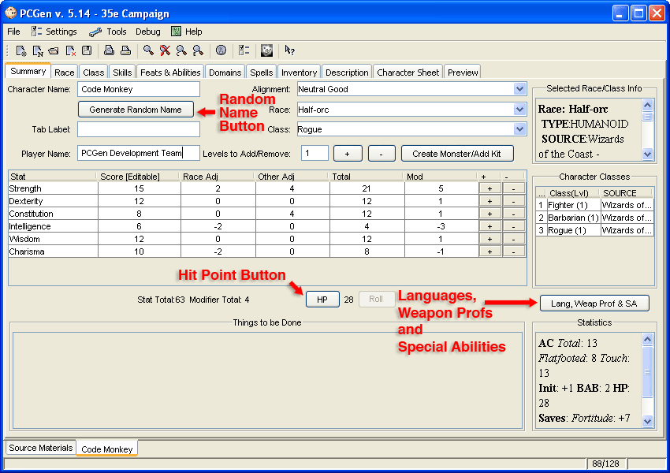
If you click the Lang, Weap Prof & SA button, the Lang, Weap Prof & SA window appears. This is where you can select the starting languages , special abilities and weapon proficiencies that your PC has. It is also where the languages from skills can be selected.
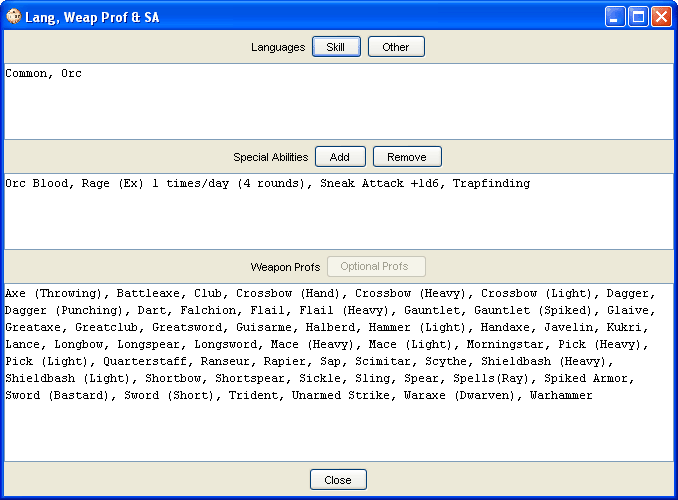
Languages - You can select the additional languages your character knows due to spent skill ranks ("Skill") or high ability scores ("Other") now, by clicking the relevant button and selecting them.
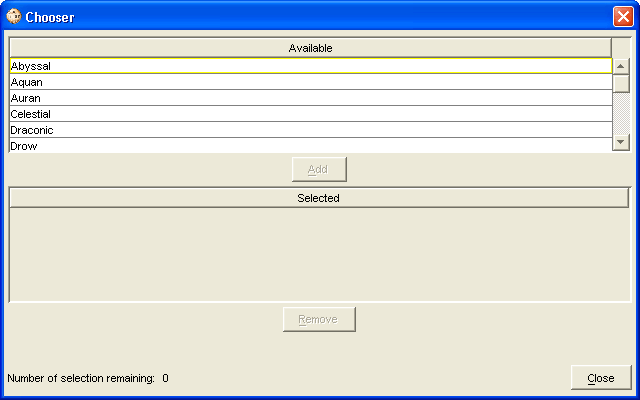
Special Abilities - This currently shows any special abilities granted by your character's race. As you gain levels in classes, the names of special abilities granted by the classes will show up here. You can also add and remove your own Special abilities at will.
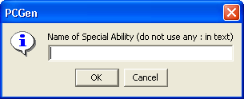
Weapon Profs - This shows all the weapon proficiencies you have. If your race or class grants you weapon proficiency, click "Optional Profs" to select it here.
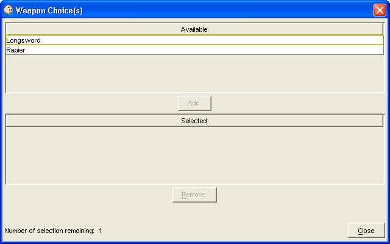
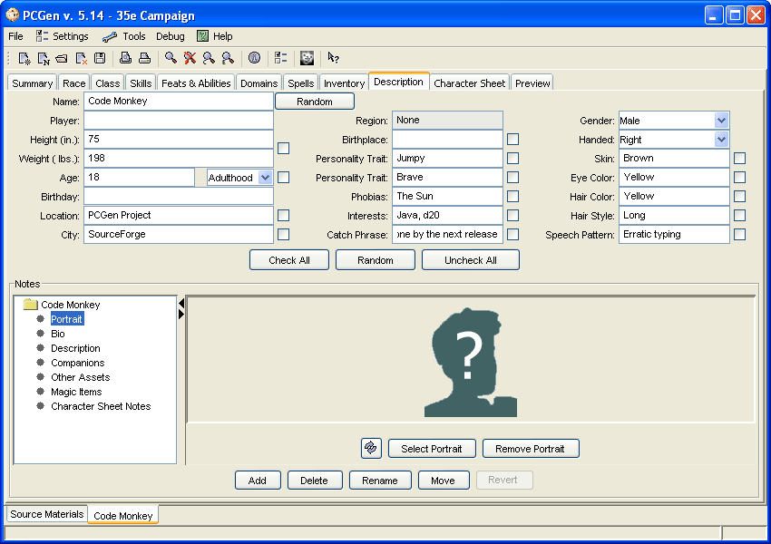
Here you can type in lots of role-playing info on your character.
Use the Check All button to tick all the options and then press the Random button to have PCGen generate random attributes. Take the ticks off the results you like and keep clicking on Random until all fields are filled to your satisfaction.
Advanced: You can use HTML tags to modify the appearance of the text on a character sheet intended to be exported as an HTML file. Using HTML tags on a character sheet will not function correctly when exporting to a PDF file.
Note: Please do not use the colon (" : ") character in any fields on this page since it can cause problems with opening your character. (this will be addressed in a future release)
The Notes frame has pre-defined sections for your character's biography, description, companions, other assets, and magical items. PCGen can't apply bonuses to your character or figure wealth using the items here, but they will be noted on your character sheet.
The DM Notes node is special as notes put in here will not be printed out on character sheets, keeping those particular notes safe from prying eyes!
You can also make any sort of notes you like in this frame. You can use this as a record of your adventures, notes on particular NPCs or locations, or anything else you wish.
Right-click a folder and select Add to add an item beneath that folder. Right-click an item and click Add to add a new folder above that item. With an item selected, you make any notes you like in the giant text field to the right.
To add a Picture to your character simply click on the browse button in the bottom right hand corner and select a jpg file, this will add that image to the list of images you can select from. Click on the refresh button next to the name of the image to have it display in that pane.
Use File>Save, File>Save As..., Use the Save icon in the button bar, or right click on the character tab and then choose Save or Save As.
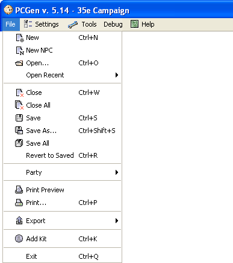
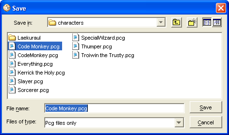